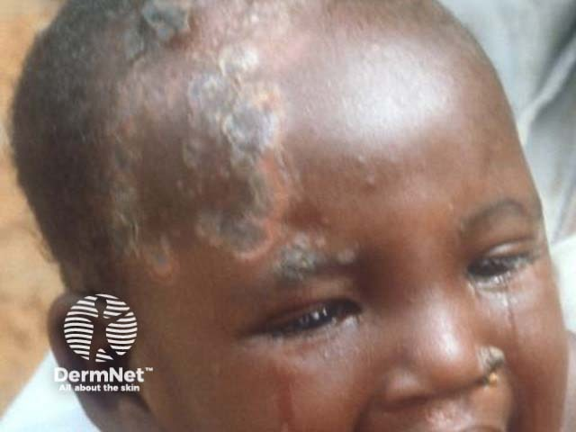

Вторичный и третичный период сифилиса, врожденный сифилис. Лечение и профилактика сифилиса.
Вторичный период сифилиса: общая характеристика и патогенез
Сроки и механизм. Вторичный период начинается через 3–4 месяца после заражения вследствие гематогенной диссеминации трепонем. Длится 2–4 года с волнообразным течением.
Три фазы:
- Вторичный свежий сифилис (syphilis secundaria recens) — первое генерализованное высыпание, наиболее яркое и обильное; выраженный полиаденит; реакция Вассермана положительна в 100% случаев; возможен угасающий твёрдый шанкр.
- Вторичный латентный сифилис (syphilis secundaria latens) — высыпаний нет, серологические реакции положительны, больной заразен.
- Вторичный рецидивный сифилис (syphilis secundaria recidiva) — сыпь менее обильна, элементы крупнее, склонны группироваться; возможен нейросифилис (менингит, менинговаскулярный сифилис, невриты). Латентные и рецидивные фазы чередуются многократно.
Общие признаки вторичных сифилидов: отсутствие субъективных ощущений, плотность элементов, тёмно-красная окраска, чёткие округлые очертания без слияния, невыраженное шелушение, самопроизвольное исчезновение без атрофии и рубцевания. Полиаденит сопутствует в течение первого полугодия.
Классификация кожных изменений вторичного периода (5 групп):
- Пятнистый сифилид (розеола)
- Папулёзный сифилид
- Пустулёзный сифилид
- Сифилитическая плешивость (алопеция)
- Сифилитическая лейкодерма
Серология: КСР, РИБТ, РИФ положительны на всём протяжении вторичного периода. РИФ может стать положительной ещё в конце инкубационного периода.
Злокачественный вторичный сифилис — у истощённых больных с иммунодефицитом: высыпания склонны к изъязвлению, преобладают папуло-пустулёзные сифилиды, лихорадка, симптомы интоксикации, манифестные поражения нервной системы и внутренних органов; возможно непрерывное рецидивирование без латентных периодов; серологические реакции нередко отрицательны.
Розеолёзный сифилид: морфология, клиника, дифференциальная диагностика
Частота: наиболее частое и раннее проявление вторичного сифилиса — у 75–80% больных.
Морфология: воспалительное гиперемическое пятно бледно-розового до насыщенно-розового цвета, 2–25 мм (в среднем 1–1,5 см), округлые или овальные очертания с нечёткими границами; не возвышается над кожей, не шелушится, не сливается, исчезает при витропрессии; субъективных ощущений нет.
Динамика: высыпает толчкообразно по 10–12 элементов в сутки; полного развития достигает за 8–10 дней; существует 3–4 недели; разрешается бесследно.
Локализация: боковые поверхности туловища, грудь, верхняя часть живота. При рецидивном сифилисе — элементов меньше, они крупнее, группируются в дуги и кольца.
Атипичные разновидности: элевирующая (уртикарная), сливная, фолликулярная, шелушащаяся.
Эрозивный вариант: на поверхности пятна — эрозия с обилием бледных трепонем; высокий риск заражения при контакте.
Эритематозная сифилитическая ангина: розеолёзные пятна на слизистой зева и мягкого нёба — сливные тёмно-красные с синюшным оттенком участки с резко очерченными границами; без боли при глотании, без гнойных налётов, без лихорадки.
Дифференциальная диагностика:
- Розовый лишай Жибера — шелушение по типу «медальона», зуд, ориентация по линиям Лангера.
- Токсикодермия — зуд, жжение, связь с аллергеном, быстрое появление сыпи.
- Отрубевидный лишай — мелкопластинчатое шелушение, симптом Бальцера, желтовато-зелёное свечение под лампой Вуда.
Ключевое отличие розеолёзного сифилида: не шелушится, не зудит, исчезает при витропрессии, серологические реакции на сифилис положительны.
Папулёзный сифилид: разновидности и клинические особенности
Папулёзный сифилид — первичный морфологический элемент — дермальная папула, резко отграниченная, правильно округлых или овальных очертаний, полушаровидной формы с усечённой или остроконечной вершиной, плотноэластической консистенции. Цвет вначале розово-красный, затем желтовато- или синюшно-красный. Субъективные ощущения отсутствуют; при надавливании тупым зондом на центр — болезненность. По периферии разрешающейся папулы — воротничок Биетта (узкий кольцевой ободок отслаивающегося рогового слоя по краю элемента).
Возникает толчкообразно, полного развития достигает через 10–14 дней, существует 4–8 недель, рассасывается без рубца и атрофии. Характерен для вторичного рецидивного сифилиса; при вторичном свежем — появляется через 1–2 недели после розеолёзной сыпи и сочетается с ней (пятнисто-папулёзный сифилид).
Классификация по размеру:
| Разновидность | Размер | Цвет | Шелушение | Особенности | Период |
|---|---|---|---|---|---|
| Лентикулярный | 3–5 мм | Синюшно-красный, затем желтовато-бурый | Воротничок Биетта по периферии | Наиболее частая форма | Свежий и рецидивный |
| Милиарный | 1–2 мм | Бледно-розовый | Минимальное | Конусовидный, вокруг устья фолликула; признак тяжёлого течения | Рецидивный |
| Нуммулярный | 2–2,5 см | Буровато- или синюшно-красный | Воротничок Биетта | Длительная пигментация после рассасывания | Преимущественно рецидивный |
| Бляшковидный | Крупные бляшки (слияние) | Медно-красный | По краю бляшки | Очень редко; крупные складки | Рецидивный |
Бляшковидный сифилид образуется при периферическом росте и слиянии папул в местах внешнего раздражения. Локализация: половые органы, перианальная область, пахово-бедренная складка, подмышечные впадины, область под молочными железами.
Дополнительные разновидности по виду и локализации:
- Себорейный — лицо, волосистая часть головы, край лба; поверхность покрыта жирными чешуйками.
- Псориазиформный — входит в дифференциальный диагноз псориаза и красного плоского лишая.
- Эрозивный (мокнущий) — в складках кожи и на слизистых; мацерация → эрозия → серозное отделяемое с большим количеством бледных трепонем; наиболее заразная форма.
- Ладонно-подошвенный — утолщённые резко отграничённые узелки эритематозно-бурого или лилово-красного оттенка; в центре растрескиваются с шелушащимся бордюром; часто принимаются за мозоли.
Широкие кондиломы — вегетирующие папулы в местах трения (прежде всего область ануса, половые органы); гипертрофируются и сливаются, образуя мясистые разрастания с беловатым налётом и серозным отделяемым; медно-красный цвет, широкое инфильтрированное основание без дольчатости; нередко единственное проявление вторичного периода; в отделяемом — большое количество бледных трепонем.
Дифференциальный диагноз: остроконечные кондиломы (дольчатое строение, узкое основание-ножка, нет медно-красного цвета); геморроидальные узлы (располагаются в просвете прямой кишки, синюшные, болезненны при воспалении).
Пустулёзный сифилид: поверхностные и глубокие формы
Пустулёзный сифилид — папула с гнойным расплавлением инфильтрата в центре; специфический инфильтрат в основании присутствует во всех разновидностях. Возникает у ослабленных больных (алкоголизм, наркомания, тяжёлые сопутствующие заболевания); признак злокачественного течения.
| Форма | Глубина | Характер корки | Исход | Период появления |
|---|---|---|---|---|
| Угревидный (акнеиформный) | Поверхностная | Мелкая сухая корочка | Без рубца | Вторичный свежий |
| Импетигоподобный | Поверхностная | Поверхностная корка в центре папулы | Без рубца | Вторичный свежий |
| Оспенновидный (вариолиформный) | Поверхностная | Центральная корка на шарообразной пустуле | Без рубца | Вторичный свежий |
| Сифилитическая эктима | Глубокая | Толстая корка, инкрустированная в кожу | Рубец | Вторичный рецидивный (через полгода и позже) |
| Сифилитическая рупия | Глубокая | Слоистая коническая («устричная») корка | Рубец | Вторичный рецидивный |
Сифилитическая эктима — глубокая округлая пустула с толстой коркой, инкрустированной в кожу; при отторжении — язва с круто обрезанными краями и периферическим валиком специфического инфильтрата багрово-синюшного цвета; обычно единична; оставляет рубец. Дифференциальный диагноз с вульгарной эктимой: при сифилитической — нет выраженного островоспалительного окружения, валик не горячий и не болезненный; решающее значение — серологические реакции на сифилис и обнаружение бледной трепонемы.
Сифилитическая рупия — эктимоподобный элемент; инфильтрат повторно распадается, каждый цикл добавляет слой экссудата → слоистая коническая корка («устричная раковина»); единична; оставляет рубец.
Контагиозность пустулёзных сифилидов существенно ниже, чем мокнущих папул: бледные трепонемы в гнойном содержимом практически не обнаруживаются.
Поражение волос, ногтей и слизистых оболочек при вторичном сифилисе
Сифилитическая алопеция
Сифилитическая алопеция — выпадение волос вследствие специфического инфильтрата в волосяном фолликуле. Три клинические разновидности: диффузная, мелкоочаговая, смешанная.
Диффузная — острое общее поредение, начинается с висков, распространяется на всю волосистую часть головы; может охватывать брови, ресницы, бороду, усы; кожа не изменена; волосы тонкие, сухие, тусклые.
Мелкоочаговая — множество беспорядочно разбросанных очагов поредения диаметром 0,5–1 см, преимущественно в области висков и затылка; плешины не растут по периферии и не сливаются; волосы выпадают не полностью; фолликулярный аппарат сохранён — волосяной покров восстанавливается через несколько месяцев. Симптом «меха, изъеденного молью». В области плешинок обнаруживаются бледные трепонемы.
Симптом Пинкуса — при поражении бровей и ресниц ресницы имеют неодинаковую длину («ступенчатообразные»).
Дифференцировать от гнёздной алопеции (очаги растут по периферии и сливаются) и микозов волосистой части головы.
Сифилитическая лейкодерма
Сифилитическая лейкодерма («ожерелье Венеры», пигментный сифилид) — возникает при вторичном рецидивном сифилисе, чаще у женщин. Локализация: задняя и боковые поверхности шеи, реже грудь, подмышечные области, верхние конечности.
Стадийность: сначала диффузная желтовато-бурая гиперпигментация, затем на её фоне гипопигментные пятна 0,5–2 см округлых или овальных очертаний, не сливающихся между собой. Существует длительно — месяцами и годами. Не шелушится. Бледные трепонемы в пигментированной ткани отсутствуют; при лейкодерме, как правило, выявляются патологические изменения в цереброспинальной жидкости.
Три разновидности:
- пятнистая — широкие прослойки гиперпигментации между пятнами;
- сетчатая (кружевная) — пятна почти сливаются, между ними тонкие полоски гиперпигментации;
- мраморная — контрастность минимальна, границы нечёткие, впечатление «грязной кожи».
Поражение слизистых оболочек
Папулёзная ангина — папулёзные элементы на слизистой мягкого нёба, миндалин, зева; субъективных ощущений минимум, общих явлений нет или они незначительны; осиплость голоса — при папулёзных высыпаниях на слизистой гортани.
Эритематозная сифилитическая ангина — розеолёзные пятна на слизистой рта, зева, мягкого нёба; застойно-красный цвет с медным оттенком; гладкая поверхность, чёткие очертания.
Сифилитический назофарингит — эрозивно-папулёзный процесс в передних отделах носовых ходов; слизисто-гнойное отделяемое, затруднение носового дыхания; у грудных детей делает акт сосания невозможным.
При рецидивном сифилисе сифилиды слизистых оболочек могут быть единственным клиническим проявлением болезни; содержат большое количество бледных трепонем — высокое эпидемиологическое значение.
Поражение внутренних органов, костно-мышечной и нервной систем при вторичном сифилисе
Специфический полиаденит — увеличение нескольких групп лимфатических узлов (поверхностных и глубоких, вплоть до медиастинальных и ретроперитонеальных); сопровождает вторичные сифилиды на протяжении первого полугодия болезни.
| Орган / система | Клинические проявления | Обратимость |
|---|---|---|
| Нервная система | Асимптомный и манифестный сифилитический менингит, менинговаскулярный сифилис, менингомиелит, невриты, полиневриты, невралгии | Полная при лечении |
| Органы чувств | Тугоухость, паренхиматозный кератит, увеит, хориоретинит, неврит зрительного нерва | Полная при раннем лечении |
| Сердце | Сифилитический миокардит (наиболее частая форма поражения сердца) | Полная при лечении |
| Печень | Острый сифилитический гепатит | Полная при лечении |
| ЖКТ | Острый сифилитический гастрит, сифилитическая язва желудка | Полная при лечении |
| Почки | Сифилитический нефроз, сифилитический нефрит | Полная при лечении |
| Кости и суставы | Диффузные периоститы (у 5% больных), ночные оссалгии, полиартритический синовит, гидрартроз, остеомиелит | Полная при лечении |
Поражение костей: диффузные периоститы и остеопериоститы — преимущественно длинные трубчатые кости нижних конечностей, реже кости черепа и грудной клетки; ночные боли в костях, стихающие днём. Суставы — полиартритический синовит с гидрартрозом.
Ранний нейросифилис — мезенхимный процесс (мозговые оболочки и сосуды). Асимптомный менингит (изменения только в цереброспинальной жидкости) — правило, манифестный — реже. Менинговаскулярный сифилис — воспаление стенок мозговых сосудов с риском тромбоза и ишемического инсульта у молодых пациентов.
Третичный период сифилиса: бугорковый и гуммозный сифилиды
Третичный сифилис развивается примерно у 40% нелечёных больных на 3–4-м году болезни. Переходу способствуют неполноценное лечение, тяжёлые сопутствующие заболевания, плохие бытовые условия.[5, с. 194]
Отличительные особенности третичного периода: поражения локализованные, деструктивные, оставляют рубцы или рубцовую атрофию; малое число трепонем и малая заразительность; классические серореакции отрицательны у 1/3 больных.
Третичные сифилиды (бугорки и гуммы) — патогистологически хронические инфекционные гранулёмы. Общие черты: малочисленность, одностороннее расположение, склонность к группированию, глубокие инфильтраты и язвы, отсутствие субъективных ощущений.
| Признак | Бугорковый сифилид | Гуммозный сифилид |
|---|---|---|
| Глубина залегания | Толща дермы | Гиподерма |
| Размер элемента | 1 мм — 1,5 см | Узел от 5–10 мм, может достигать нескольких сантиметров |
| Цвет кожи над элементом | Тёмно-красный, затем синюшно-красный | Медно-красный → буровато-красный → багровый |
| Характерный признак язвы | Валикообразные края, мозаичный рубец | Гуммозный стержень — грязно-серые некротические массы на дне |
| Исход | Мозаичный пигментированный рубец или рубцовая атрофия; на рубце новые бугорки не появляются | Звёздчатый рубец с гиперпигментацией; возможна рубцовая атрофия |
| Типичная локализация | Разгибательная поверхность верхних конечностей, туловище, лицо | Голени, голова, предплечья, грудина; слизистые |
| Осложнения | Рубцовые деформации кожи | Иррадиация на кость, надкостницу, сосуды; разрушение хрящей и костей лица; угроза жизни |
| Дифференциальная диагностика | Туберкулёзная волчанка, папуло-некротический туберкулёз, розовые угри, кольцевидная гранулёма, туберкулоидная лепра | Липома, колликвативный туберкулёз, уплотнённая эритема Базена, лепрозная лепра, гипертоническая язва голени, плоскоклеточный рак |
Бугорковый сифилид
Основной элемент — плотный полушаровидный бесполостной бугорок в толще дермы, размер 1 мм — 1,5 см, цвет тёмно-красный → синюшно-красный, субъективных ощущений нет. Через несколько недель или месяцев изъязвляется: округлая глубокая язва с валикообразными краями. Заживает мозаичным рубцом (рубчики разной глубины и цвета — розовый, бурый, белесоватый). На рубце новые бугорки не появляются.
Клинические разновидности:[2, с. 119–120]
- Сгруппированный — наиболее частый; до 30–40 бугорков на разных стадиях эволюции.
- Серпигинирующий (ползучий) — распространяется эксцентрически или в одном направлении; свежие бугорки сливаются в тёмно-красный подковообразный валик шириной 2 мм — 1 см.
- Площадкой — бугорки сливаются в бляшки 5–10 см, буроватого или тёмно-багрового цвета; регресс сухим путём или через изъязвление.
- Карликовый — редко; бугорки 1–2 мм, напоминают лентикулярные папулы.
Гуммозный сифилид
Гумма — шаровидный воспалительный узел плотной консистенции в гиподерме. Стадии развития: безболезненный узел 5–10 мм → спаивается с кожей, кожа буровато-красная → флуктуация → вскрытие с выделением 1–2 капель клейкой жёлтой жидкости → гуммозная язва → рубцевание.
Гуммозная язва: круглая, плоские валикообразно возвышающиеся неподрытые края; на дне — гуммозный стержень (грязно-серые или серозно-жёлтые некротические массы, крепко фиксированные). Субъективных ощущений нет.
Разновидности: изолированные гуммы, диффузные гуммозные инфильтрации (обширная язвенная поверхность с фестончатыми очертаниями), фиброзные гуммы (околосуставные узловатости) — вблизи разгибательных поверхностей крупных суставов, безболезненны, хрящевидной плотности, кожа не изменена.
Иррадиация гуммы — распространение на надкостницу, кость, стенки сосудов; аррозивное кровотечение из крупного сосуда — прямая угроза жизни. Гуммы слизистых: перфорация носовой перегородки («седловидный нос»), перфорация нёба, нарушение дыхания, голосообразования, глотания и речи.
Поражение внутренних органов, костей и нервной системы при третичном сифилисе
Третичный сифилис развивается примерно у 40% нелечёных больных на 3–4-м году болезни. Проявления практически не заразны: в глубине каждого инфильтрата — единичные трепонемы. Морфологическая основа — инфекционная гранулема.
| Орган / система | Нозологическая форма | Исход |
|---|---|---|
| Аорта | Сифилитический мезаортит; аневризма аорты; аортальная недостаточность | Разрыв аневризмы; сердечная недостаточность; внезапная смерть |
| Кости (большеберцовые, предплечье, череп) | Гуммозный остеопериостит (ограниченный и диффузный); гуммозный остеомиелит; негуммозный остеопериостит; сифилитический артрит | Деструкция кости; патологические переломы; деформация |
| Головной и спинной мозг | Спинная сухотка (табес); прогрессивный паралич; гуммы мозга; табопаралич | Глубокая инвалидизация; деменция; летальный исход |
| Печень, лёгкие, желудок и другие органы | Ограниченные гуммы; диффузная гуммозная инфильтрация | Рубцовая деформация органа; функциональная недостаточность |
Сифилитический мезаортит — воспаление медии; разрушаются эластические и мышечные волокна → аневризма → разрыв; поражение устья аорты → аортальная недостаточность (диастолический шум, усиленная пульсация периферических артерий).
Поражение костей: чаще — большеберцовые кости, реже — предплечье, ключица, грудина, череп, позвонки. Основные формы: гуммозный остеопериостит (ограниченный и диффузный), гуммозный остеомиелит, негуммозный остеопериостит. При поражении большеберцовой кости — «саблевидная голень». Сифилитический артрит: крупные суставы, без выраженного выпота, умеренная болезненность при движениях.
Нейросифилис — ранний и поздний:
- Ранний — преимущественно мезенхимный процесс (мозговые оболочки и сосуды); развивается в первые 5 лет после заражения; экссудативно-воспалительные и пролиферативные изменения; потенциально обратим.
- Поздний — преимущественно эктодермальный процесс (нервная паренхима); развивается через 5 лет и более; дегенеративно-дистрофические изменения; необратим.
Формы позднего нейросифилиса:
- Спинная сухотка (tabes dorsalis) — деструкция задних корешков, задних столбов и оболочек спинного мозга; «стреляющие» боли, нарушение глубокой чувствительности, сенситивная атаксия, симптом Аргайла Робертсона (расширение зрачков без реакции на свет при сохранённой конвергенции).
- Прогрессивный паралич — дегенеративно-дистрофические изменения коры лобных долей; исход — глубокая деменция.
- Табопаралич — сочетание спинной сухотки и прогрессивного паралича.
Серологическая картина третичного периода: КСР может стать отрицательным у 1/3–1/2 больных при позднем третичном сифилисе. Ключевые тесты: РИБТ — положительна у всех больных начиная со вторичного периода; РИФ — сохраняется положительной на всём протяжении болезни у всех больных.[5, с. 186, 197]
При злокачественном сифилисе третичные сифилиды могут появляться через год после заражения (галопирующее течение); серологические реакции нередко отрицательны, но могут стать положительными после начала лечения.
Врождённый сифилис: патогенез, классификация и поражение плода
При врождённом сифилисе первичного периода не существует: трепонемы попадают в организм плода через кровь. Здоровая плацента служит барьером; после её поражения трепонемы проникают к плоду через пупочную вену (основной путь) или лимфатические щели пуповины (реже). Трансплацентарное заражение — не ранее 16-й недели беременности (по одним данным — с 10-й, чаще на 4–5-м месяце). Поражение плода разворачивается на 5–6-м месяце.
Сифилис плаценты: масса резко возрастает, соотношение масс плаценты и плода достигает 1:4–1:3 вместо обычного 1:6–1:7; ткань хрупкая, рыхлая. Функционально неполноценная плацента → внутриутробная гибель плода на 6–7-м месяце.
Мертворождённый плод при сифилисе: кожа ярко-красная, складчатая, эпидермис разрыхлён и сползает пластами (мацерация); плод меньше по размерам и массе; поражены все внутренние органы и костная система.
Закон Кассовича: передача сифилиса потомству происходит преимущественно в первые 3 года после заражения матери, затем способность постепенно угасает.
Исходы беременности при сифилисе у матери: мертворождение; рождение живого ребёнка с активными проявлениями; рождение ребёнка с положительными серологическими реакциями без симптомов; рождение здорового ребёнка (при давности инфекции более 2 лет).
Классификация врождённого сифилиса:
- Сифилис плода
- Ранний врождённый сифилис: грудного возраста (до 1 года) и раннего детского возраста (1–4 года) — соответствует вторичному приобретённому
- Поздний врождённый сифилис (после 4 лет) — соответствует третичному приобретённому
- Скрытый врождённый сифилис — клинических проявлений нет, серологические реакции положительны
Ранний врождённый сифилис: клиника кожи, слизистых и костей
Новорождённый с тяжёлым врождённым сифилисом: кожа дряблая, складчатая, лицо морщинистое, землисто-бледное («старческое»); гидроцефалия, напряжённый родничок, расширенные вены головы, малая масса тела, беспокойство. Новорождённые с тяжёлыми проявлениями нежизнеспособны и погибают в первые часы или дни. У выживших клиника обнаруживается сразу после рождения или в первые 3–4 месяца жизни.
Нет органа и системы, которые не могли бы быть поражены сифилисом в грудном возрасте.[5, с. 196] Чаще всего страдают кожа, слизистые и кости.[5, с. 196]
Поражения кожи
Сифилитическая пузырчатка новорождённых (pemphigus syphiliticus neonatorum) — раннее патогномоничное проявление.[5, с. 196] Пузыри на ладонях, подошвах, предплечьях, голенях; основание инфильтрировано, окружено синюшно-красным папулёзным инфильтратом; содержимое серозное → гнойное → геморрагическое; в жидкости — бледные трепонемы в большом количестве.[5, с. 196]
Диффузная инфильтрация Гохзингера — второй патогномоничный симптом. Плотно-эластическое резко отграниченное утолщение кожи подошв, ладоней, лица, волосистой части головы. Радиальные трещины вокруг рта оставляют пожизненные лучистые рубцы Робинсона–Фурнье.

Также наблюдаются все вторичные сифилиды: розеола склонна к слиянию и шелушению; папулёзные высыпания эрозируются и пустулизируются; кожным сыпям часто предшествует повышение температуры; алопеция диффузная или мелкоочаговая. При раннем детском возрасте (1–4 года) — крупнопапулёзные мокнущие высыпания типа широких кондилом, эрозивные папулы на слизистых.
Поражение слизистых оболочек
Сифилитический насморк — специфический эрозивно-папулёзный гиперпластический передний ринит: сужение носовых ходов, слизисто-гнойное отделяемое, затруднение носового дыхания, невозможность сосания; разрушение носовой перегородки → седловидный или «козлиный» нос.[5, с. 196]
Поражение костей
Остеохондрит Вегнера (osteochondritis syphilitica): поражение зоны предварительного обызвествления; рентгенологически — «пилообразная» линия; патологический перелом → псевдопаралич Парро (конечность свисает вяло; пассивное движение болезненно — в отличие от истинного паралича).
Периоститы и остеопериоститы: многократно рецидивирующие с оссификацией на большеберцовых костях → ложные саблевидные голени; периоститы костей черепа → ягодицеобразный череп и олимпийский лоб. После 4 месяцев кожные проявления ограничиваются, в костях преобладают периоститы.[5, с. 196]
Поражение внутренних органов и нервной системы
Гепатоспленомегалия — специфическая инфильтрация и разрастание соединительной ткани.[5, с. 196] Нервная система: гидроцефалия, специфический менингит, специфический менингоэнцефалит, церебральный менинговаскулярный сифилис. Орган зрения: специфический хориоретинит — мелкие светлые или желтоватые пятна, чередующиеся с точечными пигментными вкраплениями по периферии глазного дна; острота зрения не страдает.
Итог: патогномоничную триаду раннего врождённого сифилиса образуют сифилитическая пузырчатка, инфильтрация Гохзингера и остеохондрит Вегнера с псевдопараличом Парро.
Поздний врождённый сифилис: достоверные признаки (триада Гетчинсона) и дистрофии
Поздний врождённый сифилис возникает у детей с ранним врождённым сифилисом в анамнезе или при длительном бессимптомном течении. Симптомы появляются через 2 года и более после рождения, чаще между 7 и 14 годами, после 30 лет — редко. Клиническая картина в целом аналогична третичному приобретённому сифилису, но дополняется особыми признаками трёх групп.
| Группа | Признаки | Диагностический вес |
|---|---|---|
| Достоверные (абсолютные) — триада Гетчинсона | Паренхиматозный кератит; лабиринтная глухота; зубы Гетчинсона | Достаточны сами по себе; возникают от прямого действия трепонем |
| Вероятные (относительные) | Сифилитический хориоретинит («соль и перец»); саблевидные голени; седловидный нос; ягодицеобразный череп; зуб Муна; зуб Фурнье («щучий»); радиарные рубцы Робинсона–Фурнье; синовиты Клеттона; поражения нервной системы | Только в сочетании с достоверными признаками или серологией |
| Дистрофии (стигмы) | Признак Авситидийского; «олимпийский лоб»; «готическое» нёбо; мизинец Дюбуа–Гиссара; аксифоидия Кейра; диастема Гаше; бугорок Карабелли; гипертрихоз Тарновского | Не специфичны сами по себе; значимы только в совокупности с двумя первыми группами и серологией |
Достоверные признаки: триада Гетчинсона
Зубы Гетчинсона — бочкообразная или долотообразная форма верхних центральных резцов постоянного прикуса с полулунной выемкой по свободному краю и гипоплазией жевательной поверхности. Прорезываются в возрасте 5–17 лет.
Паренхиматозный кератит — воспаление стромы роговицы без вовлечения эпителия; клинически: равномерное молочно-белое помутнение роговицы, светобоязнь, слезотечение, блефароспазм.
Лабиринтная глухота — воспалительные явления и геморрагии во внутреннем ухе с дистрофией слухового нерва. Как правило, двусторонняя, развивается внезапно, плохо поддаётся лечению.
Вероятные признаки
Истинные саблевидные голени — результат диффузного остеопериостита с реактивным остеосклерозом и искривлением кости кпереди (в отличие от ложных при раннем врождённом сифилисе — костных наслоений на передней поверхности большеберцовой кости). Синовиты Клеттона протекают без резких болей, лихорадки и нарушений функции сустава.
Дистрофии
- Диастема Гаше — широко расставленные верхние резцы
- Бугорок Карабелли — добавочный пятый бугорок на жевательной поверхности первого моляра верхней челюсти
- Признак Авситидийского — утолщение грудинного конца ключицы вследствие диффузного гиперостоза
- Аксифоидия Кейра — отсутствие мечевидного отростка
- Мизинец Дюбуа–Гиссара — укорочение мизинца из-за гипоплазии V пястной кости
- Гипертрихоз Тарновского — зарастание волосами лба почти до бровей
Алопеция при позднем врождённом сифилисе
Две формы: диффузная — общее поредение волос, начинается с висков; очаговая (мелкоочаговая) — множество беспорядочно разбросанных мелких плешин, волосы выпадают не полностью, кожа в очагах не изменена.
Лечение сифилиса: принципы, препараты и схемы
Цель специфического лечения — этиологическое излечение: создание трепонемоцидной концентрации антимикробного препарата в крови и тканях, при нейросифилисе — также в цереброспинальной жидкости.
Принцип назначения: специфическое лечение — только после клинического и лабораторного подтверждения диагноза. Три исключения:
- Превентивное лечение — лицам, имевшим половой или тесный бытовой контакт с больными ранними формами сифилиса не более 2 месяцев назад; признаков болезни нет, считаются находящимися в инкубационном периоде; дети в тесном контакте с больными подлежат обязательному превентивному лечению.
- Профилактическое лечение (для предупреждения врождённого сифилиса) — показано: беременным с сохраняющейся позитивностью нетрепонемных тестов после ранее проведённого лечения; беременным, получавшим специфическое лечение во время беременности; новорождённым без проявлений от нелечённых или неадекватно лечённых матерей; новорождённым, матери которых не получили профилактического курса при наличии показаний.
- Пробное лечение — только при поздних формах, когда лабораторное подтверждение невозможно; при ранних формах недопустимо.
Препараты выбора — пенициллины. Перед первыми инъекциями: сбор аллергологического анамнеза, назначение антигистаминных средств. Терапевтическая концентрация пенициллина в крови — 0,03 ЕД/мл и выше.
- Дюрантные: бициллин-1 (бензатина бензилпенициллин, ретарпен, экстенциллин), бициллин-5
- Средней дюрантности: бензилпенициллина новокаиновая соль
- Водорастворимые (наиболее эффективны, стационар, круглосуточные инъекции): бензилпенициллина натриевая соль кристаллическая
- Полусинтетические: ампициллин, оксациллин
Антибиотики резерва (при непереносимости пенициллина): доксициклин, тетрациклин, эритромицин, олететрин (14–40 дней в зависимости от формы); цефтриаксон; азитромицин — 0,5 г/сут 10 дней при ранних формах.
Неспецифическое лечение в комплексе со специфическим: пиротерапия (пирогенал, продигиозан), биогенные стимуляторы (экстракт алоэ, стекловидное тело, спленин), иммуномодуляторы (декарис, метилурацил).
| Форма сифилиса | Препарат | Доза | Кратность | Длительность |
|---|---|---|---|---|
| Первичный | Бициллин-1 | 2,4 млн ЕД | 1 раз в 5 дней, в/м | 3 инъекции |
| Бициллин-5 | 1,5 млн ЕД | 2 раза в неделю, в/м | 5 инъекций | |
| Новокаиновая соль пенициллина | 600 тыс. ЕД | 2 раза в сутки, в/м | 20 суток | |
| Натриевая соль кристаллическая | 1 млн ЕД | каждые 4 ч (6 раз в сутки), в/м | 20 суток | |
| Вторичный | Новокаиновая соль пенициллина | 600 тыс. ЕД | 2 раза в сутки, в/м | 28 суток |
| Натриевая соль кристаллическая | 1 млн ЕД | каждые 4 ч (6 раз в сутки), в/м | 28 суток | |
| Бициллин-1 | 2,4 млн ЕД | 1 раз в 5 дней, в/м | 6 инъекций | |
| Третичный | Натриевая соль кристаллическая | 1 млн ЕД | каждые 4 ч (6 раз в сутки), в/м | 28 сут, затем через 2 нед второй курс 14 сут |
| Новокаиновая соль пенициллина | 600 тыс. ЕД | 2 раза в сутки, в/м | 28 сут, затем через 2 нед второй курс 14 сут |
Особенность третичного сифилиса: лечению пенициллином предшествует подготовка бийохинолом (препарат висмута).
Принципы терапии по стадиям: ранние формы полностью излечимы; при поздних формах цель — клиническое выздоровление или стабилизация (деструктивные изменения необратимы). Доза препаратов между первичным и вторичным периодами не меняется — меняется только продолжительность курса.
Лабораторная диагностика сифилиса
Принцип: диагноз строится на сочетании клиники и лабораторного подтверждения. Требуется совпадение результатов как минимум двух методов — прямого или нетрепонемного и подтверждающего трепонемного. Ни одна положительная реакция в отдельности не является основанием для лечения.
Прямые методы (выявляют возбудителя):
- Тёмнопольная микроскопия («раздавленная капля»): трепонема видна как тонкая спираль с равномерными завитками и штопорообразным вращением; применима только при наличии мокнущих высыпаний (шанкр, папулы вторичного периода); неприменима при сухих элементах или после обработки антисептиком.
- ПЦР: выявляет ДНК Treponema pallidum; незаменима при поражениях полости рта, при исследовании ЦСЖ, при скудном отделяемом.
Серологические (непрямые) методы:
| Метод | Антиген | Первичный период | Вторичный период | Третичный / поздний скрытый | Особенности |
|---|---|---|---|---|---|
| МРП / КСР с кардиолипиновым АГ | Кардиолипин (нетрепонемный) | Конец первичного (5–6-я нед.) | Резко положителен | Может быть отрицателен | Скрининг; ложноположительные реакции |
| РИФ (реакция иммунофлуоресценции) | Трепонемный | Раньше других — уже в начале первичного | Положителен | Положителен | Наиболее ранняя позитивация |
| РИБТ (реакция иммобилизации бледных трепонем) | Живая трепонема | Поздно — не используется | Позитивируется | Положителен | Наибольшая специфичность; подтверждающий тест |
| РПГА (реакция пассивной гемагглютинации) | Трепонемный | Конец первичного | Положителен | Положителен | Высокочувствительный; используется для подтверждения |
Ложноположительные нетрепонемные реакции — при СКВ, антифосфолипидном синдроме, беременности, инфекционном мононуклеозе, после вакцинации. Правило: положительный нетрепонемный тест всегда требует подтверждения трепонемным.
Конфронтация — обследование полового партнёра больного; является полноценным диагностическим критерием.
Пробное лечение — только при поздних формах, когда лабораторное подтверждение невозможно; при ранних формах недопустимо.
Спинномозговая пункция показана при подозрении на нейросифилис; в ликворе исследуют цитоз, уровень белка и серологические реакции с ЦСЖ.
Профилактика сифилиса и диспансерное наблюдение
Первичная профилактика
- Санитарно-просветительная работа о путях передачи.
- Барьерная контрацепция (презерватив).
- Местная обработка после незащищённого контакта: 0,05% хлоргексидин или 70% спирт.
Вторичная профилактика: обязательные обследования
- Беременные — при постановке на учёт и в третьем триместре.
- Доноры крови.
- Работники медицины, торговли, общественного питания, детских учреждений — периодические осмотры.
- Контактные лица — превентивное лечение и наблюдение.
Профессиональное заражение медработников
- Группа риска: стоматологи, хирурги, акушеры-гинекологи, патологоанатомы.
- Защита: двойные перчатки, правила обращения с инструментарием.
- При контакте с заражённым материалом: постконтактная обработка (хлоргексидин, спирт), превентивное лечение, серологический контроль.
Диспансерное наблюдение и клинико-серологический контроль
Клинико-серологический контроль — осмотр и серологические исследования каждые 3–6 месяцев на протяжении всего периода наблюдения.
| Форма сифилиса | Срок наблюдения | Примечание |
|---|---|---|
| Превентивное лечение | 3 мес (до 1 года) | — |
| Первичный серонегативный | 6 мес | — |
| Первичный серопозитивный и вторичный свежий | 1 год | При замедленной негативации — до 2 лет |
| Поздние формы, скрытый, висцеральный, нейросифилис | 3 года | Привлекаются терапевт и невропатолог |
Критерии излеченности и прогноз
Снятие с учёта — при одновременном выполнении трёх условий:
- Лечение полноценное (по действующим рекомендациям).
- За период наблюдения — никаких клинических и серологических признаков болезни.
- Заключительное обследование (терапевт, рентгенолог, окулист, невропатолог, отоларинголог) не выявило проявлений сифилиса.[5, с. 199]
Источники
- 9. лекция сифилис
- Конспект лекций дерматология
- 5_Лекция_псориаз,_красный_плоский_лишай
- 3. Лекция микозы
- Иванов — Кожные и венерические болезни